نظام معلومات الأشعة · أرشيف الصور · كتابة التقارير
من التسجيل إلى الموعد والجهاز حتى التقرير المعتمد: مكان عمل واحد في المتصفح، بالعربية والإنجليزية والألمانية. الخادم والبيانات عندك، لا في السحابة.
النظام في مرحلته التجريبية. الصور في العارض المدمج غير معتمدة للتشخيص الأولي، والبرنامج يذكر ذلك في كل صفحة. لا يحمل النظام اعتماداً كجهاز طبي، ونوع الاعتماد المطلوب يتبع البلد الذي يُستخدم فيه. نبحث عن منشآت لتركيبات تجريبية.
01
كل وحدة تُفعَّل بمفردها. تبدأ بما تحتاجه.
بيانات أساسية مع سجل كامل للتصحيحات، وبحث بالاسم والرقم. تُدمج الملفات المكررة بموافقة شخصين ويمكن فصلها من جديد.
إنشاء الفحوص ومتابعتها: مطلوب، مجدول، وصل، قيد التنفيذ، مكتمل. كل دور يرى فقط الخطوات المسموح له بها.
غرف وأجهزة مع منع الحجز المزدوج، تسجيل الحضور يوم الفحص، الإلغاء وعدم الحضور.
تظهر الفحوص المجدولة على الجهاز عبر DICOM Modality Worklist. يختار الفني المريض بدل الكتابة، فتزول أخطاء الإدخال.
استقبال عبر DICOM وربط تلقائي للدراسات الواضحة بطلبها. كل ما فيه شك يذهب إلى قائمة مراجعة ويربطه أو يرفضه شخص.
عارض ويب من داخل الفحص مباشرة عبر رابط شخصي قصير الصلاحية. للمراجعة والعرض، لا للتشخيص الأولي.
مسودة مع قوالب، إرسال، اعتماد من قارئ ثانٍ (يمكن إيقافه)، إعادة مع ذكر السبب، ملاحق. التقرير المعتمد لا يتغيّر.
كل تقرير معتمد يحصل على ختم تشفيري للنظام ويُصدَّر بصيغة PDF/A-2b للحفظ الطويل.
رفع الإحالات والموافقات والتقارير السابقة كملف PDF أو صورة. يُفحص كل ملف من البرمجيات الخبيثة قبل حفظه.
نظرة على حالة النظام والعمل المنتظر والوظائف المفعّلة. المستخدمون والأدوار وعامل التحقق الثاني في واجهة إدارة خاصة.
يُفعَّل عند الرغبة ويُربط بخادم ذكاء اصطناعي داخل منشأتك مثل KM Code Craft AI: يترجم النصوص بين العربية والإنجليزية والألمانية، ويدقّق إملاء التقرير، ويقترح ترتيباً للعمل المنتظر. يقدّم اقتراحات فقط؛ لا يُعتمد شيء بدون إنسان.
02
لقطات من الواجهة الحقيقية ببيانات تجريبية مختلقة.
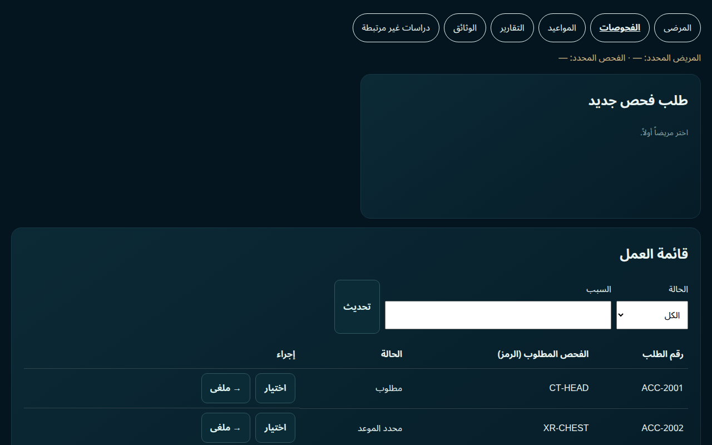
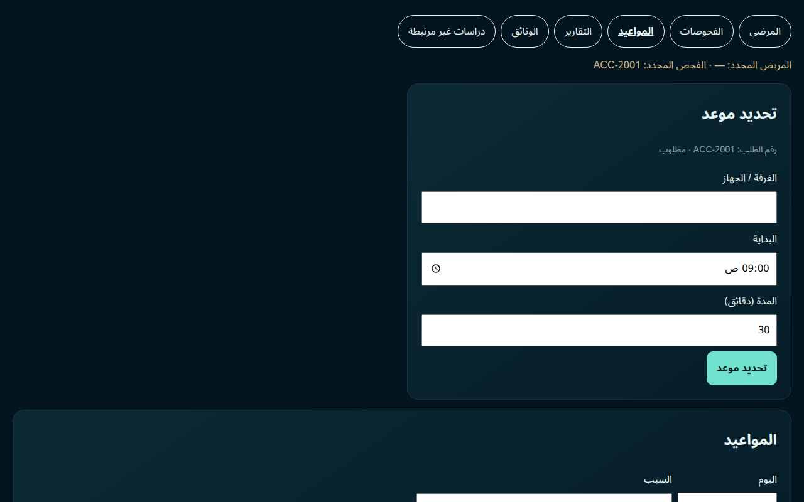
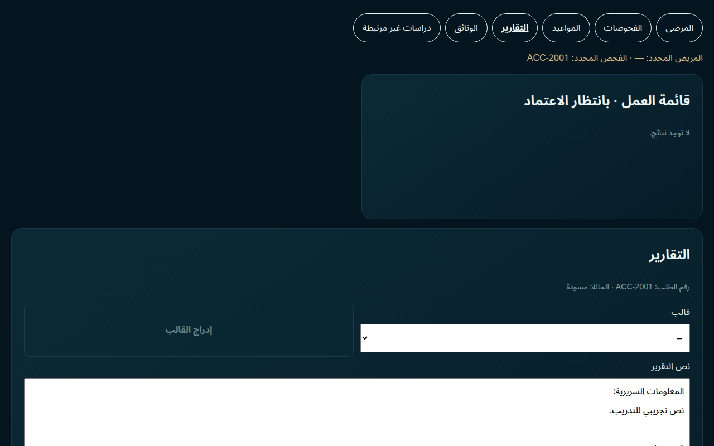
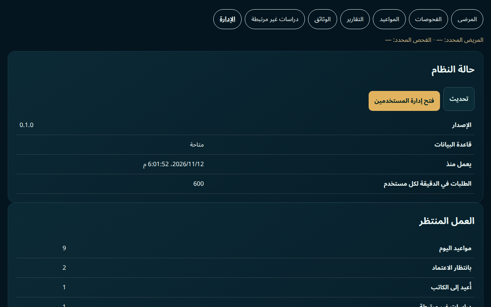
03
أحد عشر دوراً تفصل من يرى ماذا ومن يفعل ماذا. الخادم هو من يفرض الفصل، لا الشاشة فقط.
04
بيانات المرضى لا تغادر منشأتك. ومن فعل ماذا يمكن إثباته.
05
مكوّنات مفتوحة مجرَّبة، مترابطة بعناية. لا رسوم ترخيص لأطراف أخرى على المكوّنات الأساسية.
| المجال | التنفيذ |
|---|---|
| مكان العمل | تطبيق ويب للإصدارات الحديثة من Chrome و Edge؛ لا تثبيت على جهاز المستخدم |
| الخادم | Linux مع Docker؛ كل الخدمات حاويات مُحصَّنة بلا صلاحيات الجذر |
| قاعدة البيانات | PostgreSQL 17 مع فصل الوصول على مستوى الصف ونسخ احتياطي مستمر |
| أرشيف الصور | Orthanc (DICOM C-STORE، DICOMweb، Modality Worklist) |
| العارض | OHIF، مدمج عبر روابط دخول قصيرة الصلاحية |
| تسجيل الدخول | Keycloak (OpenID Connect، TOTP)، واختيارياً LDAP / Active Directory |
| الواجهات | DICOM، DICOMweb، واجهة REST مع وصف OpenAPI 3.1، مقاييس Prometheus |
| غير مشمول | واجهات HL7/FHIR، الفوترة، الأشعة عن بُعد، التوقيع الشخصي المؤهَّل |
| خادم استرشادي | لقسم صغير: 8 أنوية، 32 غيغابايت ذاكرة، قرص SSD لقاعدة البيانات، تخزين صور مرآوي بحسب حجم الدراسات، مزوّد طاقة احتياطي، وسيط نسخ احتياطي منفصل. التحديد الدقيق يتبع مسح الموقع. |
06
كل الفحوص تعمل آلياً ومدوَّنة في سجل المشروع. الأرقام من جهاز التطوير وليست وعداً لعتادك.
| الفحص | النتيجة |
|---|---|
| اختبارات آلية | أكثر من 300 اختبار وحدة و60 اختباراً على قاعدة بيانات حقيقية مع كل تغيير |
| المسار الكامل في المتصفح | دخول ← موعد ← فحص ← تقرير ← اعتماد القارئ الثاني، مع عامل تحقق ثانٍ، على خادم حقيقي |
| ربط الأجهزة | الاستقبال وقائمة العمل على أرشيف DICOM حقيقي مع جهاز محاكى، وبأسماء عربية أيضاً |
| حمل متواصل 30 دقيقة | 276,205 طلباً بلا خطأ، زمن استجابة ثابت 11 ميلي ثانية (95%)، ذاكرة مستقرة |
| الاستعادة | قاعدة بيانات 11 غيغابايت أُعيدت إلى لحظة محددة خلال 75 ثانية بعد فقدان كامل محاكى |
| تقرير PDF | PDF/A-2b بخطوط مضمَّنة، بالعربية والألمانية |
07
نسلّم النظام كمنظومة جاهزة: عتاد، تثبيت، تدريب ومتابعة.
08
09
للقراءة والمشاركة والتحقق.
تسعة كتيّبات مصوّرة، خطوة بخطوة
10
لا. النظام يعمل كاملاً داخل شبكتك. الإنترنت مطلوب فقط للدعم عن بُعد إذا رغبت به.
العارض المدمج مخصص للمراجعة وغير معتمد للتشخيص الأولي. للتشخيص تُستخدم محطة تشخيص معتمدة، والأرشيف يزوّدها بالصور عبر DICOM.
الأجهزة التي ترسل DICOM. ولقائمة العمل على الجهاز يجب أن يدعم الجهاز Modality Worklist وأن يكون مرخّصاً لها. نوضّح ذلك في مسح الموقع.
لا. الحاجة إلى اعتماد ونوعه يتبعان بلدك والغرض من الاستخدام. نوضّح ذلك معاً قبل أي تثبيت.
السعر يتبع العتاد وعدد الأجهزة ومستوى المتابعة. تحصل على عرض ثابت بعد مسح الموقع.
لك. تبقى على خادمك بصيغ مفتوحة (DICOM، PostgreSQL، PDF/A).
نعرض لك النظام ببيانات تجريبية ونناقش ما يحتاجه قسمك.
Radiology information system · Image archive · Reporting
From registration to the appointment, the modality and the released report: one workplace in the browser, in Arabic, English and German. The server and the data stay with you, not in a cloud.
The system is in its pilot phase. Images in the built-in viewer are not released for primary diagnosis; the program says so on every page. It is not approved as a medical device, and what approval is needed depends on the country you use it in. We are looking for sites for pilot installations.
01
Every module can be switched on separately. You start with what you need.
Demographics with a complete correction history, search by name and number. Duplicate records are merged under a two-person rule and can be separated again.
Create and follow examinations: requested, scheduled, arrived, in progress, completed. Each role sees only the steps it may perform.
Rooms and devices with protection against double booking, check-in on the day, cancellation and no-show.
Scheduled examinations appear on the device through DICOM modality worklist. Staff pick the patient instead of typing; mix-ups from typing errors disappear.
DICOM receive with automatic matching of unambiguous studies to their order. Anything doubtful goes to a review list and is assigned or rejected by a person.
Web viewer straight from the examination through a short-lived personal link. For review and demonstration, not for primary diagnosis.
Draft with templates, submit, release by a second reader (can be switched off), return with a reason, addenda. A released report cannot be changed.
Every released report receives a cryptographic system seal and can be exported as PDF/A-2b for long-term filing.
Upload referrals, consent forms and previous reports as PDF or image. Every file is scanned for malware before it is stored.
Overview of system state, waiting work and enabled functions. Users, roles and second factor in a dedicated administration console.
Can be switched on and connected to an AI server in your own building, such as KM Code Craft AI: translates texts between Arabic, English and German, checks the spelling of a report and suggests an order for the waiting work. It only suggests; nothing is taken over without a person.
02
Screenshots of the real interface with invented sample data.
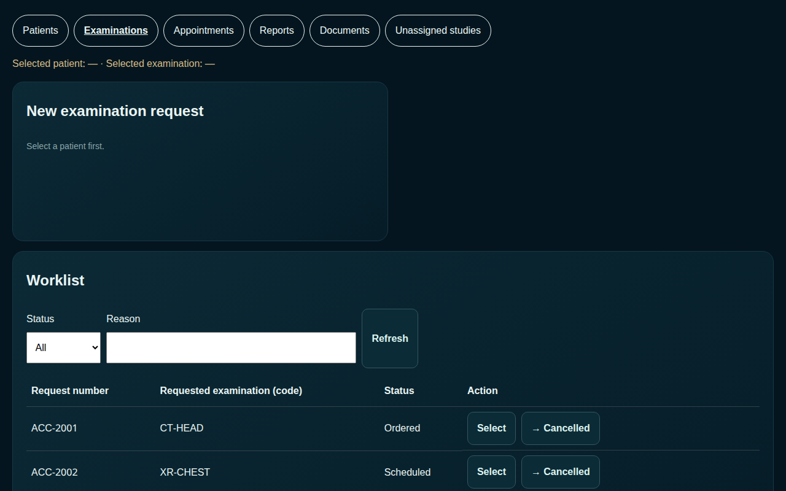
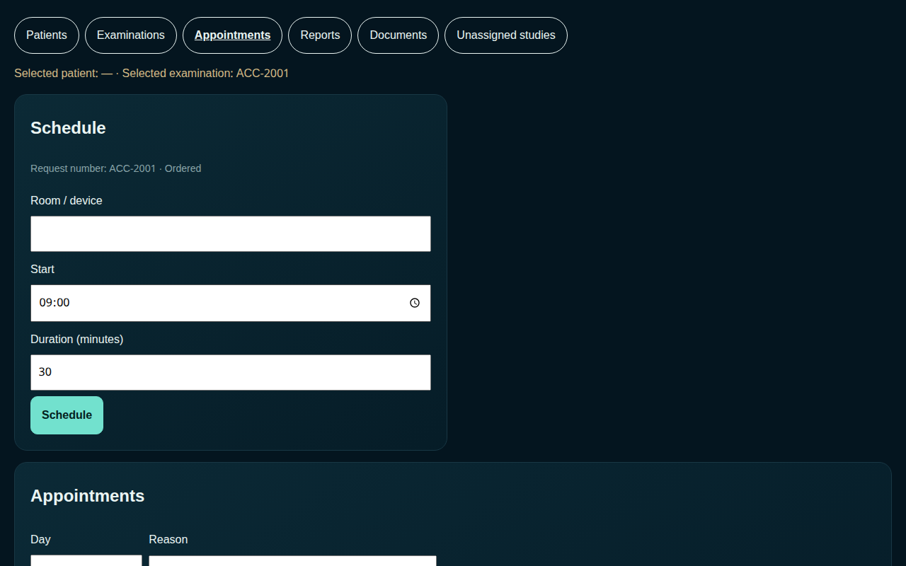
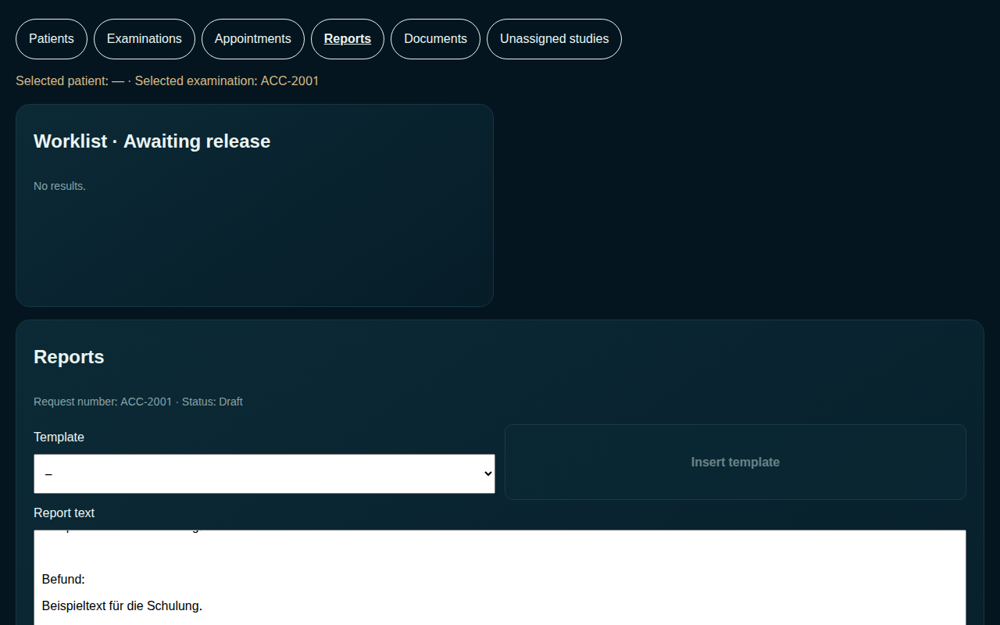
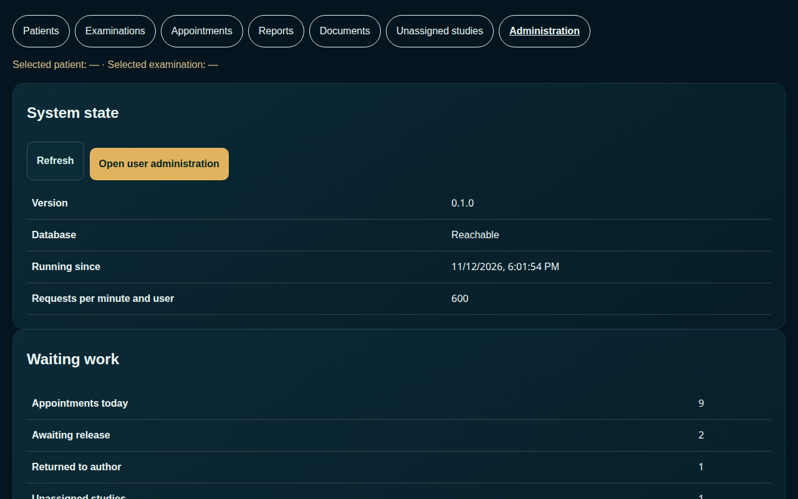
03
Eleven roles separate who may see and do what. The server enforces the separation, not just the screen.
04
Patient data does not leave your building. Who did what can be proven.
05
Proven open building blocks, cleanly connected. No third-party licence fees for the core components.
| Area | Implementation |
|---|---|
| Workplace | Web application for current versions of Chrome and Edge; nothing to install on the workstation |
| Server | Linux with Docker; all services as hardened containers without root privileges |
| Database | PostgreSQL 17 with row-level access separation and continuous backup |
| Image archive | Orthanc (DICOM C-STORE, DICOMweb, modality worklist) |
| Viewer | OHIF, integrated through short-lived access links |
| Sign-in | Keycloak (OpenID Connect, TOTP), optional LDAP / Active Directory |
| Interfaces | DICOM, DICOMweb, REST API with OpenAPI 3.1 description, Prometheus metrics |
| Not included | HL7/FHIR interfaces, billing, teleradiology, personal qualified signature |
| Server guideline | For a small department: 8 cores, 32 GB RAM, SSD for the database, mirrored image storage sized by study volume, UPS, separate backup medium. Exact sizing follows from the site survey. |
06
All checks run automatically and are recorded in the project log. The figures come from the development machine and are no promise for your hardware.
| Check | Result |
|---|---|
| Automated tests | More than 300 unit tests and 60 tests against a real database on every change |
| Whole workflow in the browser | Sign-in → appointment → examination → report → release by the second reader, with second factor, against a real server |
| Modality connection | Receive and worklist against a real DICOM archive with a simulated device, including Arabic names |
| 30-minute endurance load | 276,205 requests without an error, response time steady at 11 ms (95th percentile), memory stable |
| Recovery | 11 GB database restored to a chosen point in time in 75 seconds after a simulated total loss |
| Report PDF | PDF/A-2b with embedded fonts, Arabic and German |
07
We deliver the system as a finished installation: hardware, installation, training and support.
08
09
To read, pass on and check.
Nine illustrated guides, step by step
10
No. The system runs entirely in your own network. Internet is only needed for remote support, if you want it.
The built-in viewer is meant for review and is not released for primary diagnosis. For diagnosis you use an approved diagnostic workstation; the archive provides it with the images through DICOM.
Devices that send DICOM. For the worklist at the device, the device must support modality worklist and be licensed for it. We clarify that in the site survey.
No. Whether and which approval is required depends on your country and the intended use. We clarify this together before an installation.
The price depends on hardware, number of devices and level of support. You receive a fixed quotation after the site survey.
You do. It lives on your server in open formats (DICOM, PostgreSQL, PDF/A).
We show you the system with sample data and discuss what your department needs.
Radiologie-Informationssystem · Bildarchiv · Befundung
Von der Anmeldung über den Termin und das Gerät bis zum freigegebenen Befund: ein Arbeitsplatz im Browser, auf Arabisch, Englisch und Deutsch. Server und Daten stehen bei Ihnen, nicht in einer Cloud.
Das System ist in der Pilotphase. Bilder aus dem eingebauten Viewer sind nicht für die Primärdiagnostik freigegeben; das zeigt das Programm auf jeder Seite an. Eine Zulassung als Medizinprodukt liegt nicht vor und hängt vom Land ab, in dem Sie es einsetzen. Wir suchen Einrichtungen für Pilotinstallationen.
01
Jeder Baustein ist einzeln schaltbar. Sie beginnen mit dem, was Sie brauchen.
Stammdaten mit lückenloser Korrekturhistorie, Suche nach Name und Nummer. Doppelte Akten werden im Vier-Augen-Verfahren zusammengeführt und lassen sich wieder trennen.
Untersuchungen anlegen und verfolgen: angefordert, geplant, angekommen, in Arbeit, abgeschlossen. Jede Rolle sieht nur die Schritte, die sie ausführen darf.
Räume und Geräte mit Schutz vor Doppelbelegung, Anmeldung am Tag der Untersuchung, Absage und Nichterscheinen.
Geplante Untersuchungen erscheinen per DICOM Modality Worklist am Gerät. Das Personal wählt den Patienten aus, statt zu tippen; Verwechslungen durch Tippfehler entfallen.
Empfang per DICOM, automatische Zuordnung eindeutiger Studien zum Auftrag. Alles Zweifelhafte landet in einer Prüfliste und wird von einem Menschen zugeordnet oder abgelehnt.
Web-Viewer direkt aus der Untersuchung, über einen kurzlebigen, persönlichen Link. Zur Durchsicht und Demonstration, nicht für die Primärdiagnostik.
Entwurf mit Vorlagen, Einreichen, Freigabe durch einen Zweitleser (abschaltbar), Zurückgeben mit Begründung, Nachträge. Ein freigegebener Befund ist unveränderlich.
Jeder freigegebene Befund erhält ein kryptografisches Systemsiegel und lässt sich als PDF/A-2b für die Langzeitablage ausgeben.
Überweisungen, Einwilligungen und Vorbefunde als PDF oder Bild hochladen. Jede Datei wird vor dem Speichern auf Schadsoftware geprüft.
Übersicht über Systemzustand, wartende Arbeit und eingeschaltete Funktionen. Benutzer, Rollen und zweiter Faktor in einer eigenen Verwaltungsoberfläche.
Auf Wunsch zuschaltbar und an einen KI-Server im eigenen Haus angebunden, etwa KM Code Craft AI: übersetzt Texte zwischen Arabisch, Englisch und Deutsch, prüft die Rechtschreibung im Befund und schlägt eine Reihenfolge der wartenden Arbeit vor. Er macht nur Vorschläge; übernommen wird nichts ohne einen Menschen.
02
Bildschirmfotos der echten Oberfläche mit erfundenen Beispieldaten.
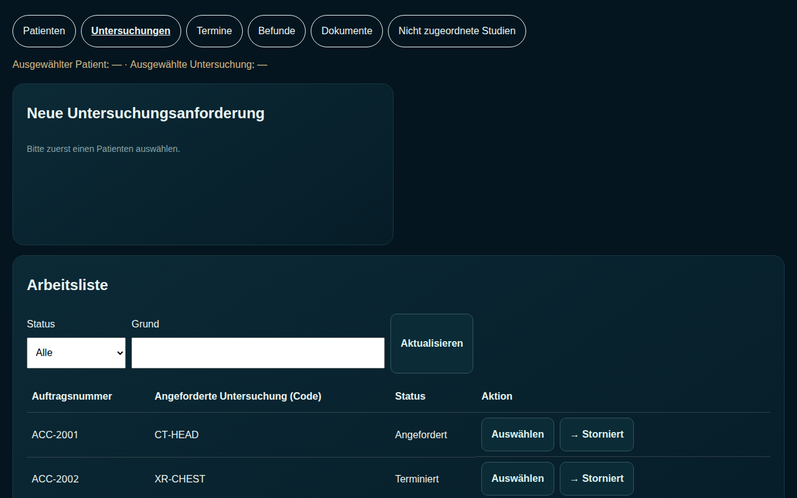
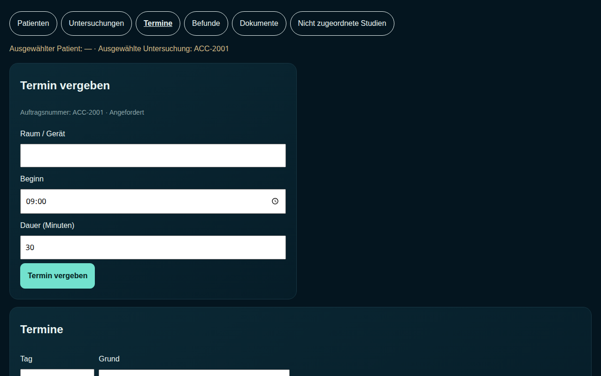
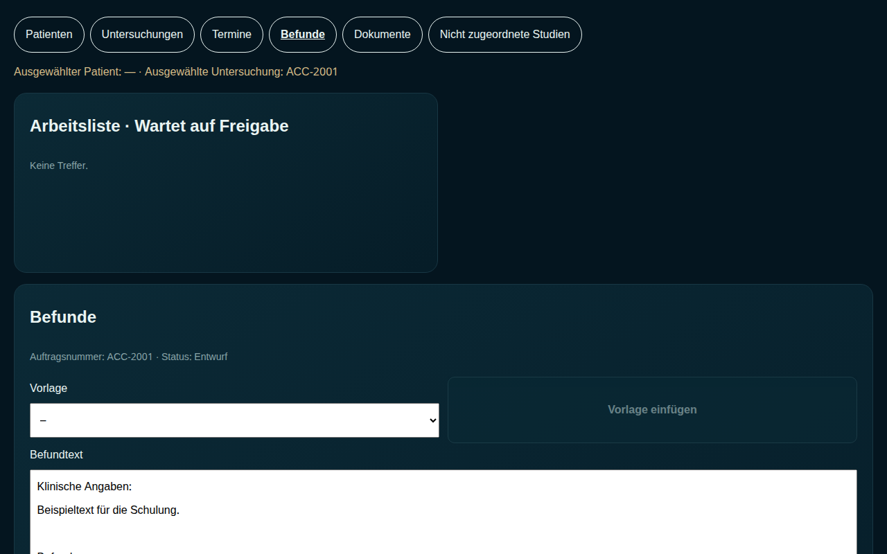
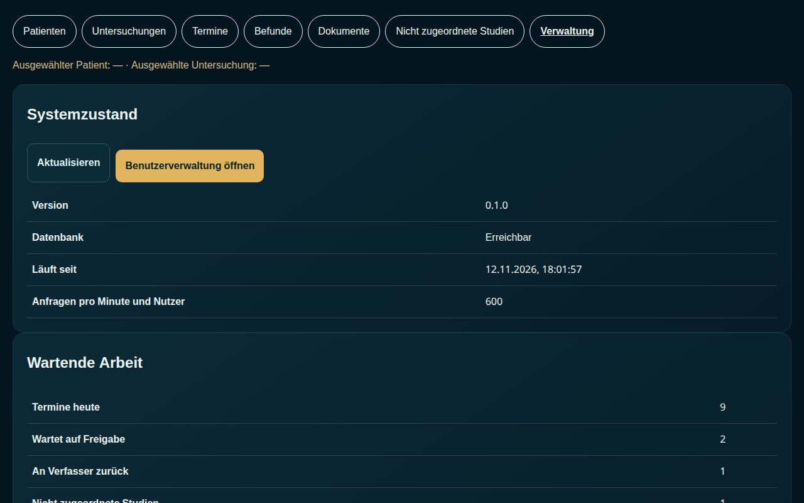
03
Elf Rollen trennen, wer was sehen und tun darf. Der Server setzt die Trennung durch, nicht nur der Bildschirm.
04
Patientendaten verlassen Ihr Haus nicht. Wer was getan hat, lässt sich belegen.
05
Bewährte offene Bausteine, sauber verbunden. Keine Lizenzgebühren an Dritte für die Kernkomponenten.
| Bereich | Ausführung |
|---|---|
| Arbeitsplatz | Web-Anwendung für aktuelle Versionen von Chrome und Edge; keine Installation am Arbeitsplatz |
| Server | Linux mit Docker; alle Dienste als gehärtete Container ohne Root-Rechte |
| Datenbank | PostgreSQL 17 mit zeilenweiser Zugriffstrennung und fortlaufender Sicherung |
| Bildarchiv | Orthanc (DICOM C-STORE, DICOMweb, Modality Worklist) |
| Viewer | OHIF, eingebunden über kurzlebige Zugangslinks |
| Anmeldung | Keycloak (OpenID Connect, TOTP), optional LDAP / Active Directory |
| Schnittstellen | DICOM, DICOMweb, REST-API mit OpenAPI-3.1-Beschreibung, Prometheus-Metriken |
| Nicht enthalten | HL7/FHIR-Schnittstellen, Abrechnung, Teleradiologie, persönliche qualifizierte Signatur |
| Richtwert Server | Für eine kleine Abteilung: 8 Kerne, 32 GB RAM, SSD für die Datenbank, gespiegelter Bildspeicher nach Studienaufkommen, USV, getrenntes Sicherungsmedium. Die genaue Auslegung folgt aus der Standortaufnahme. |
06
Alle Prüfungen laufen automatisch und sind im Projektprotokoll nachzulesen. Die Messwerte stammen vom Entwicklungsrechner und sind keine Zusage für Ihre Hardware.
| Prüfung | Ergebnis |
|---|---|
| Automatische Tests | Über 300 Unit-Tests und 60 Tests gegen eine echte Datenbank bei jeder Änderung |
| Gesamtablauf im Browser | Anmeldung → Termin → Untersuchung → Befund → Freigabe durch den Zweitleser, mit zweitem Faktor, gegen echten Server |
| Geräteanbindung | Empfang und Arbeitsliste gegen ein echtes DICOM-Archiv mit simuliertem Gerät, auch mit arabischen Namen |
| Dauerlast 30 Minuten | 276.205 Anfragen ohne Fehler, Antwortzeit gleichbleibend 11 ms (95 %), Speicher stabil |
| Wiederherstellung | 11 GB Datenbank nach simuliertem Totalverlust in 75 Sekunden auf einen gewählten Zeitpunkt zurückgeholt |
| Befund-PDF | PDF/A-2b mit eingebetteten Schriften, Arabisch und Deutsch |
07
Wir liefern das System als fertige Anlage: Hardware, Installation, Schulung und Betreuung.
08
09
Zum Lesen, Weitergeben und Prüfen.
Neun bebilderte Hefte, Schritt für Schritt
10
Nein. Das System läuft vollständig im eigenen Netz. Internet ist nur für die Fernbetreuung nötig, wenn Sie sie wünschen.
Der eingebaute Viewer ist zur Durchsicht gedacht und nicht für die Primärdiagnostik freigegeben. Für die Diagnostik nutzen Sie die dafür zugelassene Befundstation; das Archiv stellt ihr die Bilder per DICOM bereit.
Geräte, die DICOM senden. Für die Arbeitsliste am Gerät muss das Gerät Modality Worklist unterstützen und dafür lizenziert sein. Das klären wir in der Standortaufnahme.
Nein. Ob und welche Zulassung nötig ist, hängt von Ihrem Land und vom Einsatzzweck ab. Wir klären das gemeinsam vor einer Installation.
Der Preis hängt von Hardware, Zahl der Geräte und Betreuungsumfang ab. Sie erhalten nach der Standortaufnahme ein festes Angebot.
Ihnen. Sie liegen auf Ihrem Server in offenen Formaten (DICOM, PostgreSQL, PDF/A).
Wir zeigen Ihnen das System mit Beispieldaten und besprechen, was Ihre Abteilung braucht.